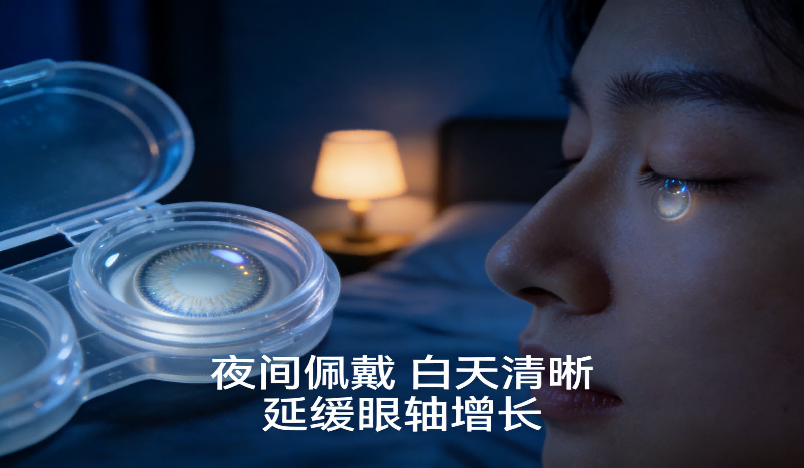

角膜塑形镜（OK 镜）
逆几何设计硬性透气接触镜，夜间配戴使角膜中央暂时变平，白天可脱镜；可延缓眼轴增长，属可逆的物理矫正。
适用：8 岁及以上；屈光度在注册证范围内；角膜曲率 39.00~48.00 D、形态规则；卫生与依从性良好，监护人配合并规律随诊。
不宜／禁忌（摘选）：年龄＜8 岁；角膜上皮病变、活动性角膜炎、圆锥角膜；角膜内皮细胞密度<2000 个/mm²；泪囊炎、中重度干眼、严重过敏性结膜炎、青光眼；接触镜或护理液过敏；妊娠哺乳、免疫功能异常等。
安全要点：按规范护理、定期复查；出现眼红、眼痛、畏光、分泌物增多等不适，立即停戴并检查。验配与镜片参数按专业人员评估执行。